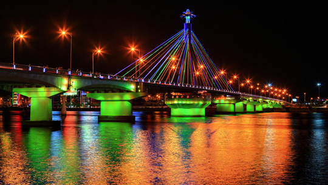

Địa điểm
1. Cầu sông hàn
Nói đến Đà Nẵng không thể không nhắc đến dòng sông Hàn thơ mộng và cầu Sông Hàn – cây cầu quay đầu tiên ở Việt Nam, do nhân dân thành phố đóng góp phần lớn tiền xây dựng. Cầu được xây dựng trên trục chính của đường Bạch Đằng, nối quận Hải Châu với quận Sơn Trà. Mỗi buổi tối, cầu sông Hàn đẹp lung linh nổi bật giữa thành phố Đà Nẵng trẻ trung.
Vào khoảng 0 giờ 30 hàng ngày, phần giữa của cầu sông Hàn quay 90 độ quanh trục, nằm dọc theo dòng chảy của dòng sông, mở đường cho tàu lớn đi qua, vào khoảng 3 giờ 30 cầu sẽ quay trở lại như cũ. Hóng mát bên sông Hàn và chờ đợi khoảnh khắc cầu quay là thú vui của nhiều người dân địa phương cũng như khách du lịch, mang lại cho họ những cảm xúc phấn khích, bồi hồi khó tả. Đến nỗi nhiều người cho rằng, “không xem cầu Sông Hàn quay nghĩa là chưa đến Đà Nẵng”.